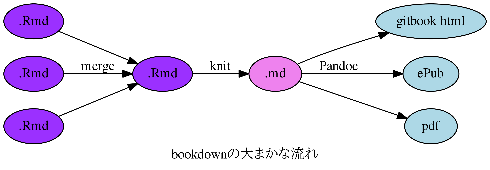
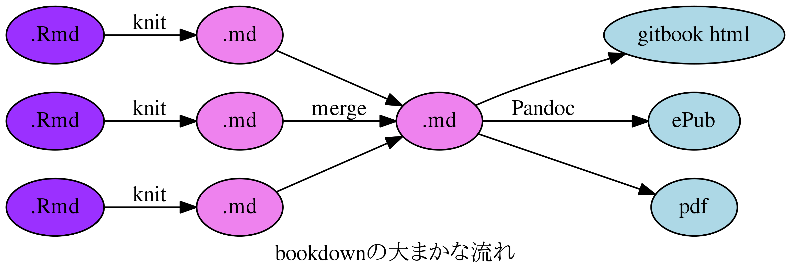

Rで本を作りたい
前田和寛
2016/11/27
はじめに
自己紹介
- 比治山大学短期大学部
- @kazutan (Twitter, GitHub, Qiita)
- http://kz-md.net/
- http://blog.kz-md.net/

R Markdwonとは
Rでドキュメント生成
- Rはデータ解析
- 実はRでドキュメントを生成することが可能
- R Markdownを利用
- その便利さ、その将来性に注目が
Rでやるメリット
- 分析からレポート生成までが完結
- WordもExcelも(そしてぱわぽも)いらない
- コピペ汚染からの開放
- 再現性の確保
- 同一の内容をそのまま再現できる
- 再利用、配布が簡単
- コードを簡単に再利用可能
- テキストデータなので運用が簡単
- 作るのが簡単
- ドキュメント部分は基本Markdown
- and more!!
基本的な考え方
- R Markdownファイルを準備
- 中身を記述
- レンダリングして出力を確認
- 2と3を繰り返す
- 完成
参考資料
- R Markdown
本家のサイト。ここに始まりここに終わります。チュートリアルが最強。
- R Markdownで楽々レポートづくり
日本語でR Markdownがどういうものなのかを解説してあります。
- R Markdown入門
スライドで要点を簡単にまとめています。
Rで本を作りたい
ドキュメントをまとめたい
- ドキュメントがだいぶたまってきた
- テキストをRmdで作りたい
- 分析の本をつくりたい
- 薄い本を自作して売っておこづk
できればWebサイトじゃなくてePubやpdfでできないのか?
bookdownパッケージ
- 複数のRmdファイルをまとめて一冊の書籍ファイルを生成
- gitbook形式, ePub形式, pdf形式
- 本を通じての図表番号割り振り
- 表紙画像もおk
- citationも対応
- サンプル
仕組み
- 復数のRmdファイルをまとめ,Pandocで出力

準備
- bookdownパッケージ(必須)
install.packages("bookdown")でOK- RStudio(できれば)
v1.0以上で。
- tex環境
pdf出力に必須。ただしいつものpdf_document以上に罠多し。
- ePubビューワ
ePub出力結果の確認に必要。
作り方
最低限の構成
以下の要素は基本必要です:
_bookdown.yml_output.yml*.Rmd*.Rmd…
_bookdown.yml
書籍全体に関する設定を記述します:
book_filename: "R usui book" # 書籍名(ファイル名になる)
chapter_name: "ch: " # この場合 ch: 1 と自動で振られる
output_dir: "docs" # 出力先の指定(デフォは"_book")
rmd_files: # 使用するRmdファイルを指定
- kosaki.Rmd # この順番に束ねます
- Rmds/sweet.Rmd # デフォではファイル名昇順_output.yml
output設定を記述します:
bookdown::epub_book: default
bookdown::gitbook:
css: style.css
split_by: "rmd"
config:
toc:
before: |
<li><a href="./">book title.</a></li>
after: |
<li><a href="https://github.com/rstudio/bookdown" target="blank">Published with bookdown</a></li>
bookdown::pdf_book:
keep_tex: yesレンダリング
- RStudioなら,BuildパネルでBuild Bookから選択(デモ)
- yamlヘッダーを(ちゃんと)作ったRmdファイル(ここではindex.Rmd)があるなら，以下のような感じでOK
gitbook形式:
bookdown::render_book("index.Rmd", output_format = "bookdown::gitbook")epub形式:
bookdown::render_book("index.Rmd", output_format = "bookdown::epub_book")pdf形式:
bookdown::render_book("index.Rmd", output_format = "bookdown::pdf_book")
- yamlヘッダーを(ちゃんと)作ったRmdファイル(ここではindex.Rmd)があるなら，以下のような感じでOK
注意点
文字コード
- bookdownがサポートしているのはUTF-8のみ
All R Markdown files must be encoded in UTF-8, especially when they contain multi-byte characters such as Chinese, Japanese, and Korean.
日本語見出しについて
- 日本語にももちろん対応
- ただし，R Markdownいつもの日本語見出し問題は健在
- 詳しくは以下を参照:
第4回 レポつく自由自在 ～R Markdownにまつわるエトセトラ～：R Markdownで楽々レポートづくり｜gihyo.jp … 技術評論社 _output.ymlに必要事項を記述してください- よくわからない場合は聞いてください
- 詳しくは以下を参照:
pdf & ggplot2 & 日本語の罠
- pdf_book出力形式でggplot2で作成した図に日本語を使用すると文字化け(もしくはエラー)
- pdf_book(正確にはpdf_document)の場合，Rチャンクの出力は
dev=pdf()がデフォ - これが日本語を含むggplot2出力でひっかかる
- pdf_book(正確にはpdf_document)の場合，Rチャンクの出力は
- 回避策(暫定的)
dev=png()に変更させる- 画質調整しないとpdfで汚くなる
dev=cairo_pfd()の利用- でも全体に設定するとhtmlやepubでコケる
- トリックはあるけど…(検証中)
Merge-KnitかKnit-Mergeか

さいごに
楽して作りたいんだよ
- 日本語向けに調整した，最小構成のリポジトリをGitHubに作ってました
- いろいろ設定しましたが，以下のリポジトリも参考になるかと
- 本家が準備しているデモ用リポジトリも
- でもまずは本家ドキュメントを読んでね
Enjoy!
- 今回の資料をおいてるリポジトリ
- もっと詳しい解説は，R Advent Calendar 2016の22日目でまとめる予定
- r-wakalangの#rmarkdown，
@kazutan，#おねがいぞうさん